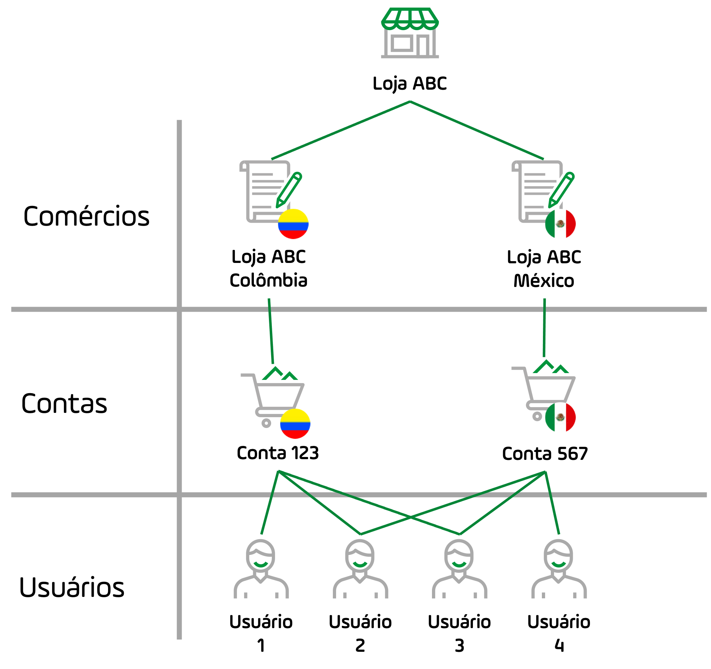
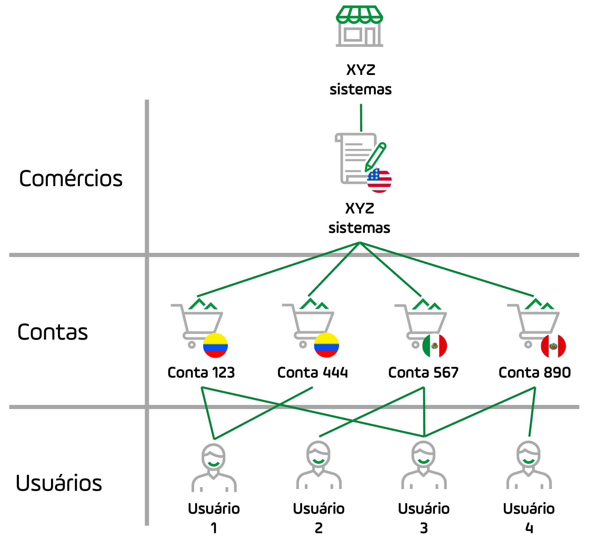
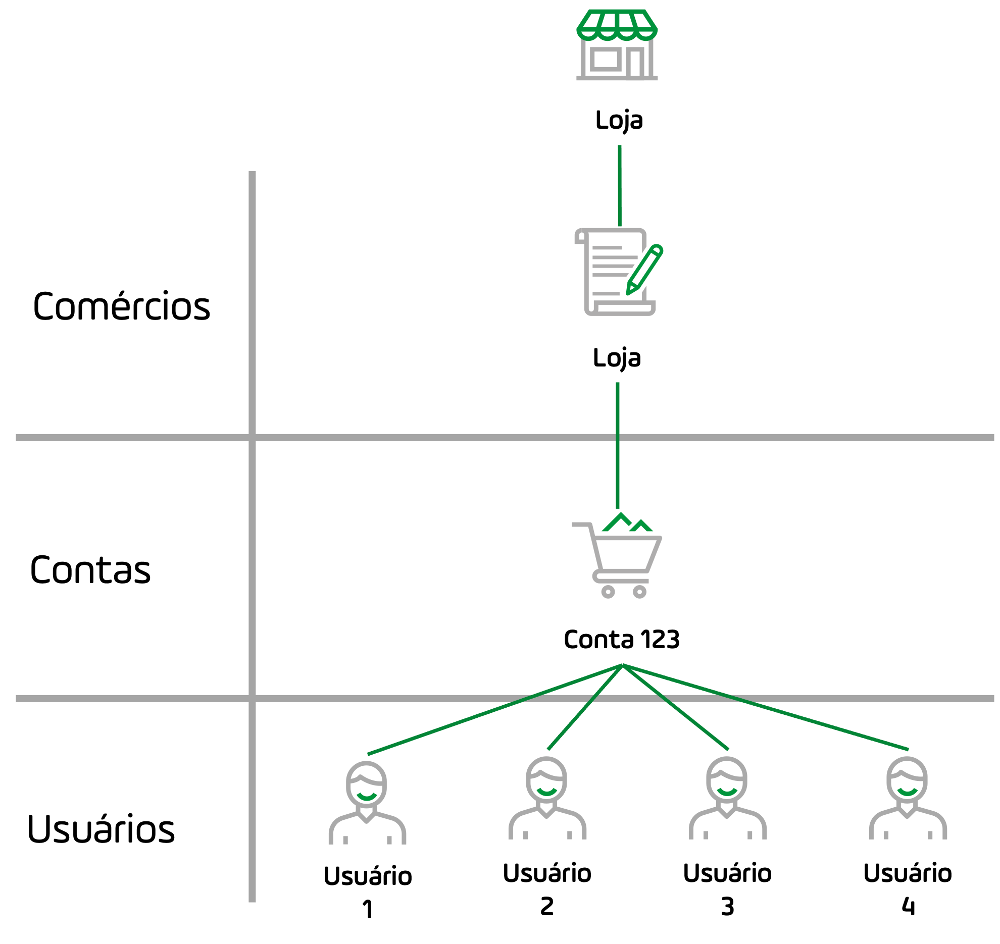

Guia do Módulo PayU
Facilitamos para os comércios a oferta de pagamentos online, eliminando o desafio da integração com vários métodos de pagamento.
O módulo PayU é o sistema onde você pode gerenciar sua conta com segurança. Neste módulo, você pode alterar sua senha, obter relatórios de vendas, encontrar os dados necessários para integrar seu site à nossa plataforma, utilizar ferramentas para receber pagamentos e transferir dinheiro para sua conta bancária. O módulo PayU é ideal para empresas que precisam:
- Manter o controle de seus estoques e vendas realizadas através do PayU.
- Estar atualizado com as informações dos movimentos financeiros de sua conta.
- Fazer solicitações à equipe de suporte sobre problemas em sua conta.
Para acessar o módulo PayU, acesse www.payu.com, no canto superior direito, você encontra a opção de fazer login.
Alternativamente, você pode ir diretamente https://merchants.payulatam.com/.
Observação
Você ainda não tem um usuário? Aprenda a criar um
aqui.
O que você pode fazer no Módulo PayU
O módulo PayU permite que você execute as seguintes operações:
- Veja os fundos disponíveis em sua conta PayU e transfira-os para sua conta bancária.
- Consulte os movimentos de suas contas, extratos e relatórios.
- Veja o status de suas vendas
- Veja as credenciais de autenticação para integrar à sua plataforma de vendas: API Key, API Login e merchant ID (Id do Comércio).
- Atualize seus dados bancários.
- Configure o logotipo da sua empresa para aparecer na web checkout (portal de pagamento).
- Defina as URLs de sua página de confirmação e página de resposta (se você tiver uma integração de API ou check-out na web).
Conceitos do módulo PayU
O Módulo PayU permite que um usuário gerencie a loja e suas contas relacionadas. A complexidade do seu módulo PayU depende do seu tamanho. Vamos explicar isso usando os seguintes conceitos.
- Comércio (Merchant): o comércio é a loja que oferece produtos ou serviços. PayU define a loja como a pessoa jurídica que contrata o serviço PayU. Se sua loja for legalmente constituída em dois países (duas entidades legais), cada entidade legal deve ser criada como um comércio.
Por exemplo, Loja ABC tem filiais no México e na Colômbia, mas a loja constituiu uma empresa em cada país. Quando Loja ABC contrata os serviços PayU, PayU cria dois comércios diferentes.
Observação
Cada comércio em PayU tem um único Merchant ID.
- Conta (Account): uma conta no PayU representa um país de processamento, uma linha de negócios ou um recurso PayU contratado de um determinado comércio. Se a sua loja está legalmente constituída em um país e vende produtos em muitos países, você tem um único comércio (sua loja) no qual você encontra uma conta para cada país.
Por exemplo, Sistemas XYZ é uma empresa legalmente constituída nos Estados Unidos que oferece serviços de hospedagem web na Colômbia, no México e no Peru. Quando Sistemas XYZ contrata os serviços PayU, PayU cria um comércio com três contas.
Além disso, uma conta também é uma das seguintes:
- Um ramo de negócios: quando um comércio possui muitos segmentos de negócios diferentes em um determinado país. Por exemplo, uma empresa de software pode oferecer seu produto como um ramo e o treinamento como outro. Nesse caso, essa loja possui duas contas.
- o Um recurso: se você contratar dois recursos PayU com um esquema de preços diferente, cada recurso é representado em seu módulo PayU como uma conta. Por exemplo, uma loja tem um preço para processar com cartões de crédito e outro para pagamentos em dinheiro.
- Usuário (User): um usuário é uma pessoa que possui um perfil para administrar ou consultar os dados de uma conta.
Um perfil é um conjunto de permissões para acessar uma conta. Um usuário pode ter um ou vários perfis, isso significa que um usuário pode acessar várias contas e vários comércios.
Os gráficos a seguir mostram a relação entre os conceitos acima.
Loja multi-comércio
A loja Loja ABC tem filiais no México e na Colômbia, ambas legalmente constituídas como Shop ABC México and Shop ABC Colômbia, esta é a relação entre os conceitos anteriores para este exemplo:

-
O módulo PayU para Loja ABC tem dois comércios: Loja ABC México e Loja ABC Colômbia, cada comércio tem uma conta, pois processa apenas no país onde está constituída.
-
Loja ABC tem quatro usuários; Usuário 2 e Usuário 3 podem acessar ambas as contas, entretanto Usuário 1 só pode acessar a conta colombiana e Usuário 4 a conta mexicana.
Observação
Nesse caso, cada comércio pode ter várias contas, se necessário.
Loja de comércio único com várias contas
Sistemas XYZ é uma empresa legalmente constituída nos Estados Unidos que oferece serviços de hospedagem web na Colômbia, no México e no Peru. Além disso, Sistemas XYZ possui dois ramos de negócios na Colômbia: hospedagem na web e treinamento. Esta é a relação entre os conceitos anteriores para este exemplo:

- O módulo PayU para Sistemas XYZ tem um só comércio, visto que está legalmente constituído nos Estados Unidos. Como Sistemas XYZ processa pagamentos em três países, este comércio tem quatro contas; duas para a Colômbia (uma para cada linha de negócios), uma para o México e uma para o Peru.
- Sistemas XYZ tem quatro usuários; Usuário 3 pode acessar todas as contas. Enquanto isso, os outros usuários podem acessar seu país atribuído.
Observação
Os comércios podem estar fora de nossos países de processamento. No entanto, eles devem ter uma conta bancária intermediária em cada país onde desejam processar.
Comércios individuais com contas únicas
Este é o caso mais comum ao usar o módulo PayU. Uma loja está legalmente constituída em um país onde oferece seus produtos ou serviços. Esta é a relação entre os conceitos anteriores para este exemplo:

- O módulo PayU desta loja tem uma conta única e um só estabelecimento, que todos os usuários podem acessar de acordo com o perfil que têm.
Tópicos nesta seção
Aprenda como fazer login em sua conta, recuperar sua senha e atualizar seus dados de usuário.
Aprenda a gerenciar usuários, perfis e permissões para acessar as contas em seus comércios.
Aprenda a vender usando PayU, transferir fundos, reembolsar transações e gerenciar disputas.
Saiba como consultar seus extratos, transferências, vendas e outras informações que sua loja possa exigir para atender aos regulamentos.
Última modificação
17 de dezembro de 2021:
Documentation in Portuguese (53de9675)